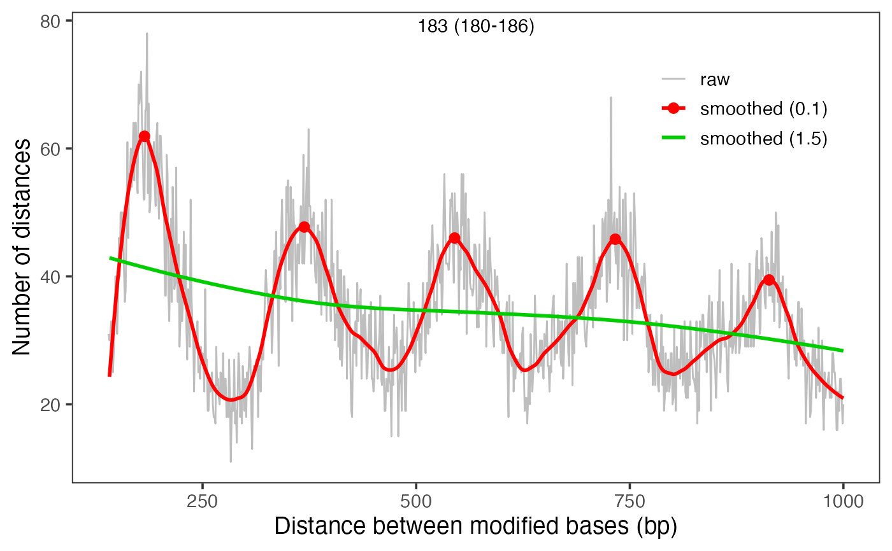
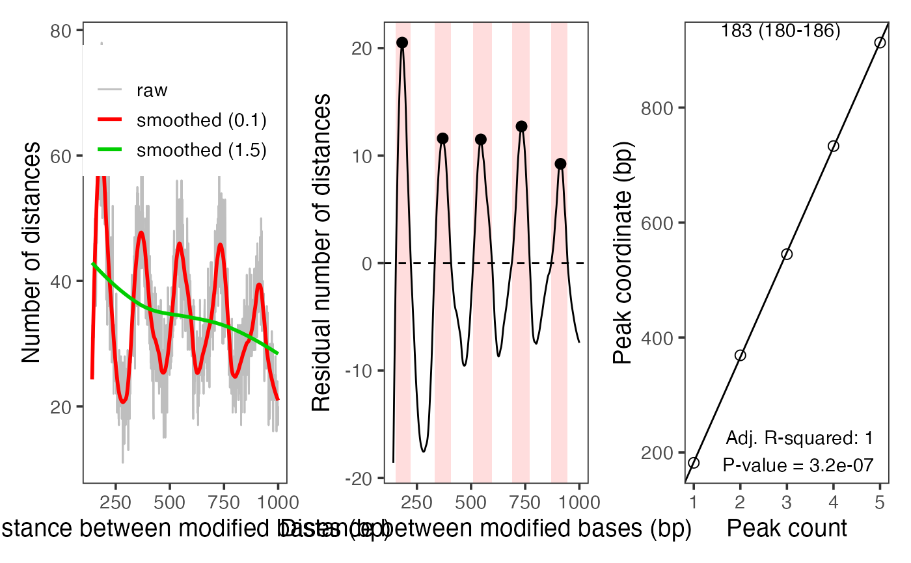

Calculate distances between modified bases on individual reads.
Source:R/modbase_spacing.R
calcModbaseSpacing.RdCalculate the frequencies of same read modified base distances,
for example from read-level modification data to estimate nucleosome
repeat length. Distance calculations are implemented in C++
(calcAndCountDist) for efficiency.
Usage
calcModbaseSpacing(
se,
assay.type = "mod_prob",
min_mod_prob = 0.5,
rmdup = TRUE,
dmax = 1000L
)Arguments
- se
SummarizedExperimentobject with read-level footprinting data, for example returned byreadModBam. Rows should correspond to positions and columns to samples.- assay.type
A string or integer scalar specifying the assay of
secontaining the read-level modification probabilities.- min_mod_prob
Numeric scalar giving the minimal modification probability for a modified base.
- rmdup
Logical scalar indicating if duplicates should be removed. If
TRUE(the default), only one of several alignments starting at the same coordinate is used.- dmax
Numeric scalar specifying the maximal distance between modified bases on the same read to count.
Value
integer vector with dmax elements, with the element at
position d giving the observed number of alignment pairs at that
distance.
References
Phasograms were originally described in Valouev et al., Nature 2011 (doi:10.1038/nature10002). The implementation here differs in three ways from the original algorithms:
Instead of same strand alignment start positions, this function is adapted to single-molecule footprinting data and measures the distances between same-read modified base positions.
It does not implement removing of positions that have been seen less than
ntimes (referred to as an-pile subset in the paper).It does allow to retain only alignments that fall into selected genomic intervals (
regionsargument).
See also
estimateNRL to estimate the nucleosome repeat length
from a phasogram, plotModbaseSpacing to visualize an annotated
phasogram, calcAndCountDist for low-level distance counting.
Examples
modbamfiles <- system.file("extdata",
c("6mA_1_10reads.bam", "6mA_2_10reads.bam"),
package = "footprintR")
se <- readModBam(modbamfiles, "chr1:6940000-6955000", "a")
moddist <- calcModbaseSpacing(se)
print(estimateNRL(moddist)[1:2])
#> $nrl
#> [1] 183.9
#>
#> $nrl.CI95
#> 2.5 % 97.5 %
#> 179.8787 187.9213
#>
plotModbaseSpacing(moddist)

plotModbaseSpacing(moddist, detailedPlots = TRUE)
